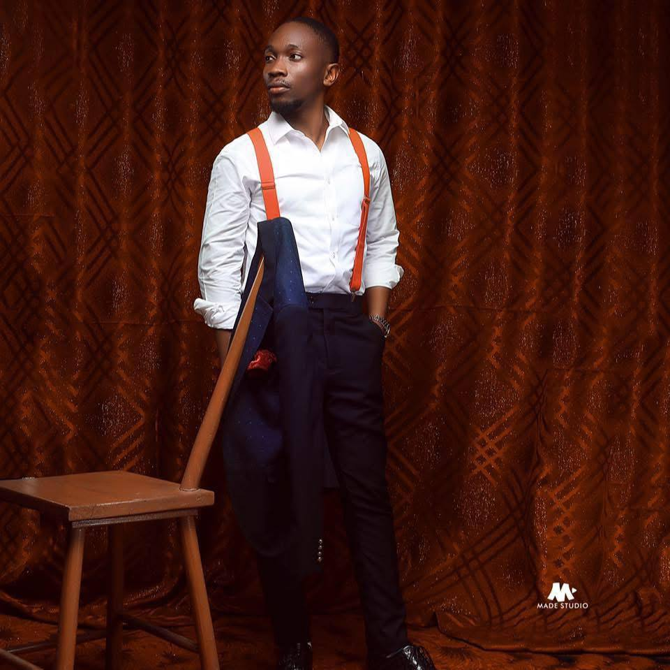

EKENG EWA EKENG | WDD 130
I am Ekeng, Ekeng E, a dedicated and results-driven professional with a unique fusion of expertise in physiology and extensive experience in the banking sector. My strong foundation in physiology has equipped me with analytical and problem-solving skills, which I’ve successfully translated into delivering operational excellence and achieving exceptional results in the fast-paced world of banking.
Currently, I am broadening my skill set and embracing new challenges by pursuing a Bachelor of Science certificate in Software Programming through BYU Pathway. This journey is a testament to my commitment to continuous learning and adapting to the ever-evolving professional landscape.
Throughout my career, I have consistently demonstrated my ability to navigate complex challenges, optimize workflows, and contribute to the achievement of organizational goals. My cross-disciplinary background enables me to approach problems creatively and implement solutions that are both effective and innovative.
I believe in the power of collaboration and teamwork as drivers of success. My colleagues describe me as a reliable and resourceful professional who brings enthusiasm and dedication to every project. By fostering strong relationships and maintaining open communication, I ensure that all stakeholders are aligned and focused on shared objectives.
Passionate about growth and development, I continuously seek opportunities to refine my skills and expand my knowledge. As I venture further into the field of software programming, I am excited to explore how technology can unlock new possibilities and drive impactful change.
Let’s connect and collaborate to make meaningful impacts together.